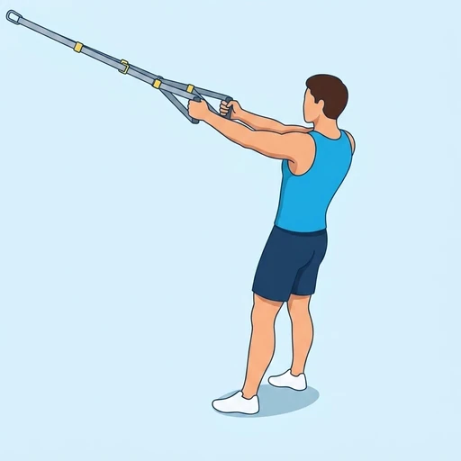

TRX Face Pull
The TRX Face Pull is a compound pulling exercise targeting the posterior deltoids and rhomboids, using a suspension trainer to improve upper back strength and posture.
Shoulders · Suspension Trainer · Beginner


Muscles worked by the TRX Face Pull
Primary
Secondary
Also called: rear deltoid, posterior delt, rear delt, back delt, posterior deltoid, rhomboid.
Equipment
Also called: trx, trx straps, suspension straps, bodyweight straps, inversion straps.
How to do the TRX Face Pull
- Grasp the TRX handles with an overhand grip, palms facing down.
- Lean back until your arms are fully extended and your body forms a straight line.
- Pull the handles towards your face, driving your elbows high and wide.
- Squeeze your shoulder blades together at the peak contraction.
- Slowly extend your arms back to the starting position with control.
Form tips
- Maintain a rigid torso throughout the movement; avoid arching your lower back.
- Focus on initiating the pull with your upper back muscles, not just your arms.
- Adjust your body angle to modify difficulty: a more horizontal position is harder.
At a glance
| Body part | Shoulders |
|---|---|
| Category | Strength |
| Force type | Pull |
| Mechanic | Compound |
| Difficulty | Beginner |
| Equipment | Suspension Trainer |
| Goals | Hypertrophy, Mobility |
| Tags | Pull day, Calisthenics, Shoulder stability |
| MET | 6.0 (metabolic equivalent, for calorie estimates) |
| Unilateral | No |
| Bodyweight | No |
| Dataset id | trx-face-pull |
TRX Face Pull in German & Spanish
| German | TRX Face Pull |
|---|---|
| Spanish | Face Pull con TRX |
Descriptions, instructions and tips ship in all three languages in the JSON.
Related exercises
Exercise data (JSON)
The record below is exactly what exercises.json ships for this exercise — names, descriptions, instructions and tips in English, German and Spanish.
{
"id": "trx-face-pull",
"name_en": "TRX Face Pull",
"name_de": "TRX Face Pull",
"name_es": "Face Pull con TRX",
"description_en": "The TRX Face Pull is a compound pulling exercise targeting the posterior deltoids and rhomboids, using a suspension trainer to improve upper back strength and posture.",
"description_de": "Der TRX Face Pull ist eine zusammengesetzte Zugübung, die die hinteren Deltamuskeln und Rautenmuskeln anspricht, um die Kraft des oberen Rückens und die Haltung zu verbessern.",
"description_es": "El Face Pull con TRX es un ejercicio de tracción compuesto que trabaja los deltoides posteriores y los romboides, utilizando un entrenador de suspensión para mejorar la fuerza de la parte superior de la espalda y la postura.",
"category": "strength",
"force_type": "pull",
"mechanic": "compound",
"difficulty": "beginner",
"equipment": "suspension_trainer",
"body_part": "shoulders",
"primary_muscles": [
"posterior_deltoid",
"rhomboids"
],
"secondary_muscles": [
"trapezius"
],
"goals": [
"hypertrophy",
"mobility"
],
"tags": [
"pull_day",
"calisthenics",
"shoulder_stability"
],
"variation_group": "reverse-fly",
"is_unilateral": false,
"is_bodyweight": false,
"instructions_en": [
"Grasp the TRX handles with an overhand grip, palms facing down.",
"Lean back until your arms are fully extended and your body forms a straight line.",
"Pull the handles towards your face, driving your elbows high and wide.",
"Squeeze your shoulder blades together at the peak contraction.",
"Slowly extend your arms back to the starting position with control."
],
"instructions_de": [
"Greife die TRX-Griffe mit einem Obergriff, die Handflächen zeigen nach unten.",
"Lehne dich zurück, bis deine Arme vollständig gestreckt sind und dein Körper eine gerade Linie bildet.",
"Ziehe die Griffe zu deinem Gesicht, indem du deine Ellbogen hoch und weit nach außen führst.",
"Presse deine Schulterblätter am Höhepunkt der Kontraktion zusammen.",
"Strecke deine Arme langsam und kontrolliert in die Ausgangsposition zurück."
],
"instructions_es": [
"Sujeta las asas del TRX con un agarre prono, las palmas hacia abajo.",
"Inclínate hacia atrás hasta que tus brazos estén completamente extendidos y tu cuerpo forme una línea recta.",
"Tira de las asas hacia tu cara, llevando los codos altos y abiertos.",
"Aprieta los omóplatos al máximo de la contracción.",
"Extiende lentamente los brazos de vuelta a la posición inicial con control."
],
"tips_en": [
"Maintain a rigid torso throughout the movement; avoid arching your lower back.",
"Focus on initiating the pull with your upper back muscles, not just your arms.",
"Adjust your body angle to modify difficulty: a more horizontal position is harder."
],
"tips_de": [
"Halte deinen Rumpf während der gesamten Bewegung stabil; vermeide ein Hohlkreuz.",
"Konzentriere dich darauf, den Zug mit den oberen Rückenmuskeln zu initiieren, nicht nur mit den Armen.",
"Passe deinen Körperwinkel an, um den Schwierigkeitsgrad zu ändern: eine horizontalere Position ist schwerer."
],
"tips_es": [
"Mantén el torso rígido durante todo el movimiento; evita arquear la espalda baja.",
"Concéntrate en iniciar la tracción con los músculos de la parte superior de la espalda, no solo con los brazos.",
"Ajusta el ángulo de tu cuerpo para modificar la dificultad: una posición más horizontal es más difícil."
],
"met": 6.0,
"images": {
"flat": {
"start": "images/flat/trx-face-pull-start.webp",
"peak": "images/flat/trx-face-pull-peak.webp"
}
}
}Fetch just this exercise
const { exercises } = await fetch(
"https://exercise-dataset.com/exercises.json"
).then(r => r.json());
const ex = exercises.find(e => e.id === "trx-face-pull");Free for personal and commercial in-app use with attribution (“Exercise data by RepDB”) — see the license and ready-made attribution snippets. Redistributing the data as a dataset or API is not permitted.